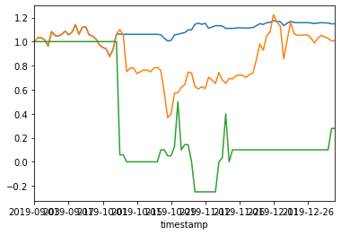
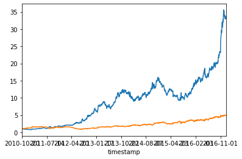

Summary:
I am a student at the University College London studying for a BSc in Economics and Statistics. I have a strong background in computer programming, specifically concerning data science. This derived from a passion for quantitative finance and alternative data. I have experience in both front-end and back-end development, networking and working in development teams,
Skills:
Coding Languages:
PythonNode.Js
HTML, CSS, Javascript
Go
C++
Libraries:
Datascience: Pandas, NumpyMachine Learning: Tensorflow, SciKit learn, Keras
Web Design: ExpressJS, Jquery
Databases:
MySQLMicrosoft SQL Server
SQLite
MongoDB
Gremlin
Projects
Below are some example graphs produced by the backtesting software. The one to the left traded PG&E (PCG) on the basis of the sentiment of tweets sent by members of California state government. The right graph used a neural net to trade Take Two Interactive (TTWO) on the basis of reviews scraped from metacritic. It is a textbook example of overfitting, but it was an interesting project nevertheless


Work Experience:
2018 Part-time QA Tester at 4me Inc.
2019-2020 Part-time developer at 4me Inc.
2019-2020 Part-time developer at 4me Inc.
Education:
BSc in Economics and Statistics, degree anticipated May 2023
University College London, United Kingdom
Graduated Redwood High School 2017-2020
GPA: 4.3
University College London, United Kingdom
Graduated Redwood High School 2017-2020
GPA: 4.3